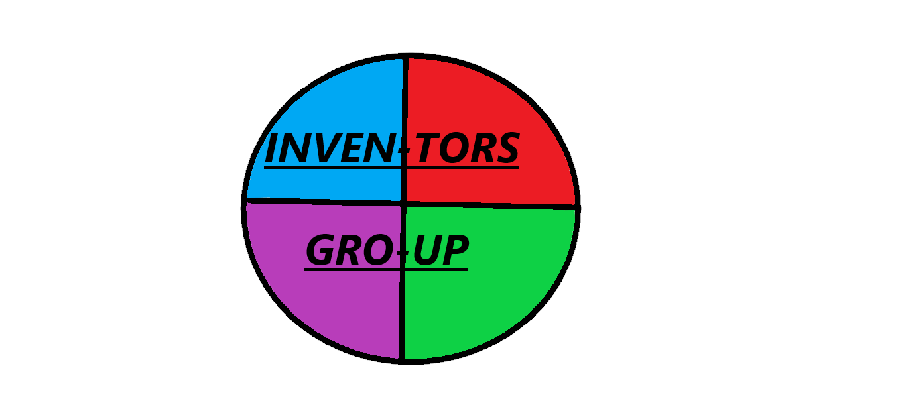

BBC microbit
About BBC microbit
BBC microbit is a programing board the allows young coders and explorers to make thier own simle robots and many more awesome things.
The BBC microbit is the first verson of the microbit the newest BBC microbit is BBC microbit V2.
If you want to know more about BBC microbit click this link About BBC microbit The BBC microbit V2 has a sensitive logo and an inbuilt speaker.
If you want know about the BBC microbit V2 click on this linkAbout BBC microbit V2
SOME PICTURES AND LINKS
some pictures of BBC micro:bit V2
some pictures of BBC micro:bit


Here is the link to a website where you can code your microbit. microbit code editor
Here is the link of the page where you can download microbit code editor.download microbit code editor
PICTURES OF MICROBIT CASES
Covers for BBC microbit

Cover for BBC microbit V2

THE link to buy microbits
The links to buy microbits
THE links to buy covers for microbits
link to buy cover for BBC microbit
link to buy cover for BBC microbit V2